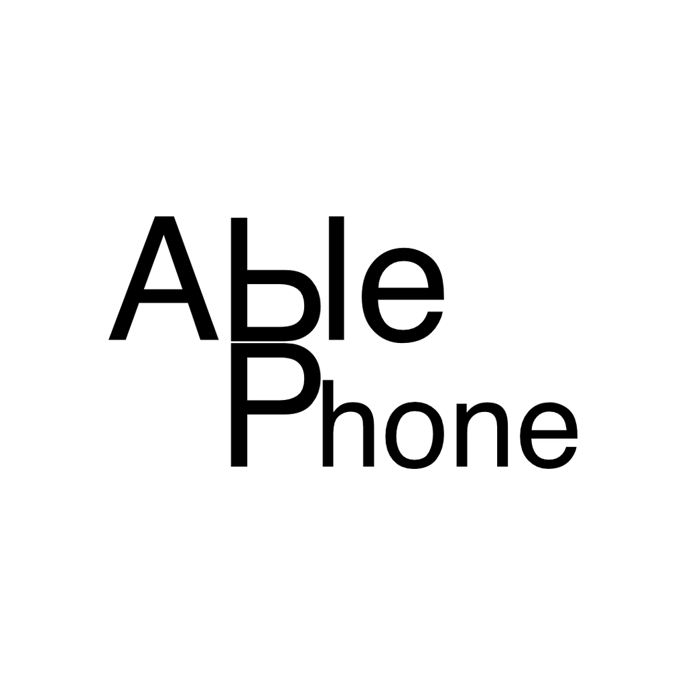

できること
- iPhone のセンサー値（User Acceleration / Device Motion / Gyro）を取得して送信
- フェーダー・Pad 入力を Ableton Live 側へリアルタイム送信
- QR コードで接続先（IP / Port）を簡単設定

AblePhone は iPhone のセンサー情報を Ableton Live へ OSC（UDP）で送信するためのアプリです。
基本的にフレーム単位で /ablephone/frame を送信します。Pad はイベントとして trigger/release の送信構成に対応しています。